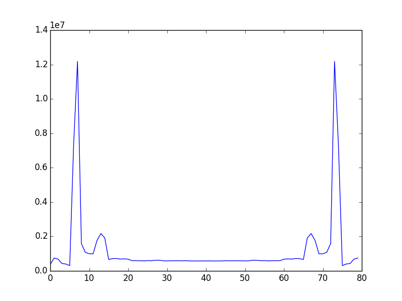

physics
Neglecting transients a string supports oscillations of the form
And sound waves to match.
Data
Taking the fourier transform from the web audio API described here with size set at 2^11 reading from time series data sampled at 44.1k hz we get curves like

which is the curve for time 1426709547141 in sample_1.txt, these curves have a bin width of ~21.5 hz.
here is the full view of sample 1,
The region of interest is from line 390 to 900 where a chromatic scale is being played featuring 29 notes start at E81.
The current approach involves first detrending the data by generating meta points for 2 adjacent 40-bin sections, calculating a line from those 2 points and subtracting it from the data.
Once detrended, the auto correlation is calculated.
By fiat it is assumed that the maxima of this curve would occur at intervals equal to the frequency of the fundamental. So once generated, the peaks are found by determining at what index (data[index]-data[index-1])*(data[index+1]-data[index]) and data[index+1]-data[index] are both less than 0. When these peaks are found, the simple average difference is taken to be true value of the fundamental.
Applying this process to the interested region of sample_1 we get the following curve
despite the crudeness of the approach, the results agree with the expected values surprisingly well by visual inspection and turning the frequencies into notes as determined in the freq_to_note method.
Further goals
As this much progress has been made without applying much physical reasoning beyond rough intuition, applying rigorous fitting techniques ought to provide substantial gains in precision and measurable accuracy. This would allow intelligent estimation of when the data being generated is still contaminated with transients from a pluck, or even being able to detect multiple notes played in parallel as would be needed for chord detection. Currently speed is not a pressing concern as the spectra takes 20ms to generate and is processed in ~1 ms.
The fourier transform package provided by numpy is proving less fruitful than I would have hoped as passing the detrended data through produces a plot like this
and applying it to the correlated data is slightly more evocative, but fitting something arbitrary like a gaussian to the smaller bump is not consistently more reliable than the average maxima gap method.
